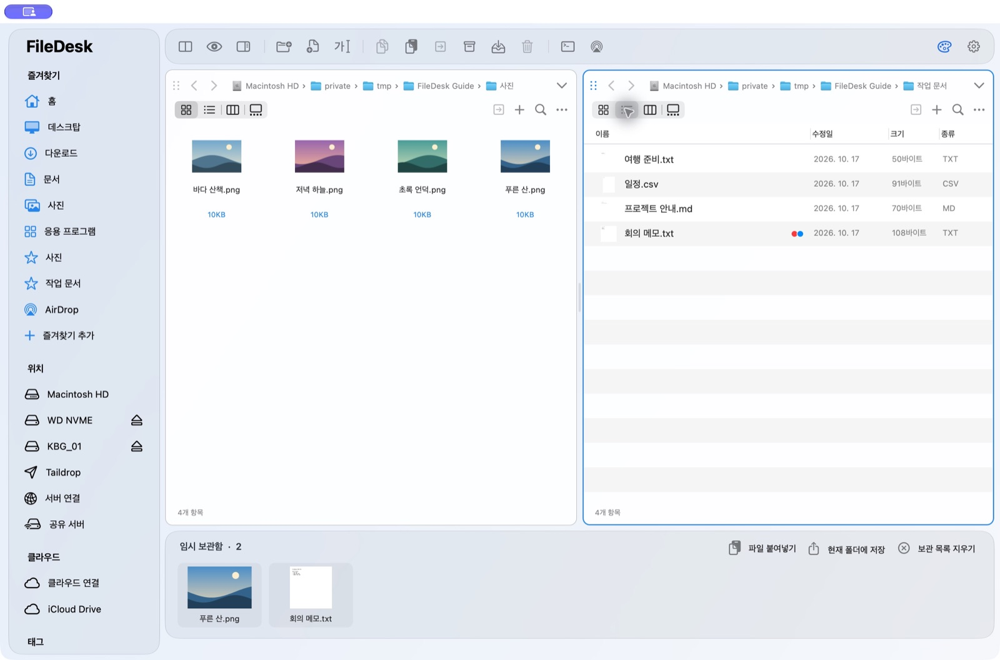

파일을 정리하는
편안한 작업 공간.
폴더를 나란히 열고, 필요한 파일을 미리 보고, 원하는 곳으로 옮기세요. FileDesk는 일상적인 파일 작업을 한곳에 모은 macOS 파일 매니저입니다.
FileDesk 다운로드macOS 14 이상 · Apple Silicon 및 Intel Mac

실제 화면으로 시작하는 FileDesk
분할 창과 임시보관함, Taildrop 전송, 나만의 테마와 폴더 색상까지 단계별로 안내합니다.
그림으로 보는 사용 설명서여러 폴더를 함께
분할 패널과 탭으로 작업할 폴더를 나란히 살펴봅니다.
열기 전에 확인
파일 썸네일과 미리보기로 필요한 항목을 찾습니다.
파일 작업을 한곳에
복사·이동·이름 변경과 임시보관함으로 파일을 정리합니다.
파일을 잠시 모아 두세요
여러 폴더의 파일을 한곳에 모아 원하는 폴더로 복사합니다. 보관 목록을 비워도 원본은 그대로입니다.
내 색으로 만드는 화면
색상표에서 원하는 테마 색상을 고르고 라이트·다크 모드를 선택하세요.
한눈에 알아보는 폴더
폴더마다 색상을 지정하고 중앙에 이미지를 넣어 용도를 구분합니다.
클라우드도 같은 창에서
Google Drive·OneDrive·pCloud·Dropbox와 서버의 파일을 선택한 창에서 탐색합니다.
내 기기로 바로 전송
Tailscale로 연결된 기기를 선택해 파일을 보냅니다. Mac과 Windows 사이에서도 사용할 수 있습니다.
반복 작업을 가볍게
일괄 이름 변경, 중복 파일 검색과 텍스트 문서 비교로 정리 시간을 줄입니다.
기능별 사용 방법과 연결 조건은 사용 설명서에서 확인하세요.
쓰던 클라우드를 그대로, FileDesk에서
Google Drive for desktop, OneDrive, pCloud, Dropbox의 공식 동기화 앱에 로그인해 두면 FileDesk가 동기화 폴더를 찾아 바로 엽니다. 별도 인증이나 사용자 수 제한이 없어 대부분의 사용자에게 권장하는 방법입니다.
고급: 공식 앱 없이 FileDesk에서 브라우저로 직접 로그인해 폴더를 탐색하고 파일을 업로드하거나 내려받을 수도 있습니다. 직접 연결은 공식 동기화 앱과 별도로 관리됩니다.
로그인 정보는 사용자의 컴퓨터에 암호화해 저장합니다. 클라우드 파일은 사용자의 기기와 선택한 서비스 사이에서 전송되며, FileDesk 운영자의 서버를 거치지 않습니다. 자세한 내용은 개인정보처리방침을 확인하세요.
Google 인증 앱은 프로덕션으로 전환했습니다. 공개 검증이 완료되기 전에는 미확인 앱 안내와 사용자 수 제한이 남습니다. 최신 Mac 설치 파일은 브라우저 Google 로그인 설정을 포함하며, 이전에 배포된 파일은 새로 내려받아야 합니다. 서비스가 권한을 철회하거나 재인증을 요구하면 다시 로그인해야 합니다.
지원 및 사용권
FileDesk의 개발·지원 문의는 ifreemumu@gmail.com으로 보내 주세요. 로그인 토큰이나 비밀번호는 보내지 마세요.
개인의 비상업적 사용은 제공된 원본 그대로 무료입니다. 기관·회사·조직 및 상업적 사용은 별도의 유료 이용 허락이 필요합니다. 사용권 및 저작권 안내